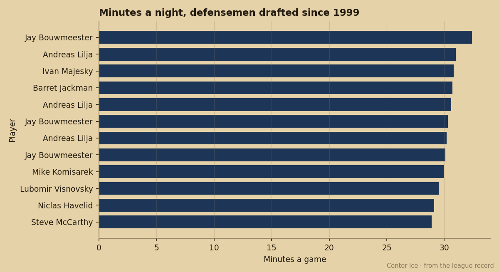

The 3rd Pick Plays 32.4 Minutes, Scores 22 Points, and Has 1 Year Left on $1.20M
No defenseman under 24 plays more ice than Jay Bouwmeester. The Index has him at zero, his contract expires before his 22nd birthday, and Florida sits at 52 points.
 Pete LarocqueScouting editor · The Prospect File
Pete LarocqueScouting editor · The Prospect File Jay Bouwmeester78 is 21 years old and plays 32.4 minutes a night for
Jay Bouwmeester78 is 21 years old and plays 32.4 minutes a night for  Florida Panthers. No defenseman under 24 in this league plays more. The File profiled
Florida Panthers. No defenseman under 24 in this league plays more. The File profiled  Barret Jackman85 at 30.7 minutes a fortnight ago. It profiled Mike Komisarek80 at 30.0 the day before. Bouwmeester outplays both on the clock.
Barret Jackman85 at 30.7 minutes a fortnight ago. It profiled Mike Komisarek80 at 30.0 the day before. Bouwmeester outplays both on the clock.
His production reads 22 points in 59 games. Three goals, nineteen assists. The File spent last week on Komisarek's 65 points and a 44-point team. It spent the week before that on Jackman's +5 on the Index. Bouwmeester's 22 points are a long way from both, and he earns them on roughly 2 more minutes of ice than either man.

The closest production comparison is  Rostislav Klesla83. Klesla finished with 23 points in 60 games for
Rostislav Klesla83. Klesla finished with 23 points in 60 games for  Toronto Maple Leafs on 14.8 minutes a night. Bouwmeester has 22 in 59 for a club with 20 wins. Same point total, more than twice the ice. Florida uses him because the next-best defenseman on the roster is Lukas Krajicek72 at 71 overall.
Toronto Maple Leafs on 14.8 minutes a night. Bouwmeester has 22 in 59 for a club with 20 wins. Same point total, more than twice the ice. Florida uses him because the next-best defenseman on the roster is Lukas Krajicek72 at 71 overall.
The Book gives him Speed 89, Balance 84, Pass 84, Shot Power 84, Agility 82, Checking 82. At 6'6" and 210 pounds, he shoots left. A defenseman with an 89 speed grade and 84 passing is a top-pairing player on paper, which is where Florida has parked him since he was 19.
The Development Index has him at zero. The Book's base grade for Bouwmeester reads 81; his displayed overall is 77. He hasn't moved all season, which stands out in a class where Komisarek is +6 and Klesla is +5.
Florida's season reads 20-29-8, 52 points, last in the Pacific.  Olli Jokinen85 at 84 overall carries the offense with 60 points.
Olli Jokinen85 at 84 overall carries the offense with 60 points.  Felix Potvin87 at 86 tends the net. The team has pieces. It doesn't have enough of them, and Bouwmeester is the best defenseman on a roster that cannot win the division.
Felix Potvin87 at 86 tends the net. The team has pieces. It doesn't have enough of them, and Bouwmeester is the best defenseman on a roster that cannot win the division.
His contract pays $1.20M with 1 year left. The trade deadline falls 26 days from today. A 21-year-old with 89 speed, a 95 potential grade, top-pairing minutes, and a year of team control on a 52-point club is the kind of file that makes every scouting department on the line for a phone call.
Bouwmeester was born September 27, 1983, in Edmonton, the son of a school teacher who played defence at the University of Alberta. He grew up on a backyard rink, played the 1996 Quebec Pee-Wee Tournament, and went first overall in the 1998 WHL Bantam Draft to Medicine Hat. In his third full WHL season he put up 61 points and the background sheet carries him as a candidate to go first overall at the 2002 draft. Florida took him third, one spot behind  Rick Nash82.
Rick Nash82.
He played 82 games as a 19-year-old rookie, a franchise record, and made the 2003 All-Rookie Team on defence. A foot injury cost him 18 games in 2003-04. This year he has played 59 of Florida's 59.
The Panthers have 20 wins in 59 games. They will not make the playoffs. Bouwmeester turns 22 on September 27. His contract expires before he plays a single minute at 22.